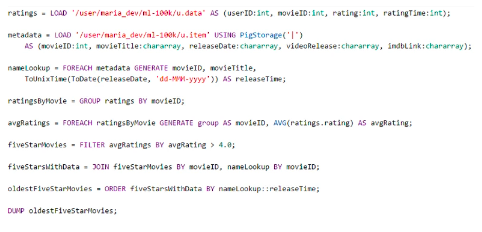
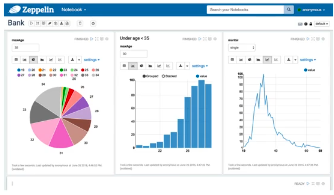

AWS Elastic Map Reduce (EMR)
Contents
AWS Elastic Map Reduce (EMR)#
Managed Hadoop framework run on EC2 instances (AWS implement Hadoop to automate set up using AWS EC2 instances)
includes Spark/Hbase/Presto/Flink/Hive & more, depends on EMR cluster version
includes EMR Notebooks
integrated with other AWS services (e.g. AWS Glue metastore)
EMR Cluster#
collection of EC2 instances (node) runs processes
all nodes reside in single Availability Zone (AZ) to improve communication between each other
have dynamic hdfs replication factor:
for clusters with core nodes number higher than 10 - replication factor equals 3
for clusters with core nodes number between 4 and 9 - replication factor equals 2
for smaller clusters with core nodes number less or equal 3 - replication factor equals 1
you can override this default setting by editing hdfs-site.xml file
Types of nodes#
master/primary node#
manages the cluster,
tracks status of tasks,
monitor health of core and task nodes
can run tasks
since EMR 5.23, it is possible to make primary node redundant by
Use multiple primary nodesoption - this option run 3 primary nodes instead of 1 and provide election when primary node is corrupted and stop runningpossible option of single-node cluster when there is only primary node (no core nor task nodes) - in such case all tasks are run on primary node, so it is impossible to scale up in such scenario
core node#
hosts HDFS data
runs tasks for the Primary Node
not a good option to use spot instances for core node because of data holding (dead of spot would mean lost of HDFS data)
task node#
runs tasks, based on docs they are only optional helpers
doesn’t host data,
use when you don’t need local HDFS datastore, if you have data on S3 bucket,
good use of spot instances because doesn’t contain data and there is no risk of data loss itself
can be added and removed from running clusters
like in every hadoop cluster, tasks will be executed by core and task nodes (and optionally by master node)
choosing the right number of nodes#
undersized cluster will be slow
oversized cluster will be more expensive than needed
primary node#
mostly it will be one node
can be three primary nodes for high availability
core nodes#
important when hdfs will be used - because of hdd/sdd space required for storing data using setup replication factor
EMR instance types#
for master node, AWS recommend m5.xlarge if cluster contains less than 50 nodes, above this limit larger master node is recommended (m4 family)
for core and task node
in general, AWS recommend m5.xlarge
if node have external dependencies (e.g. web crawlers), AWS recommend less expensive t2.medium
for cpu intensive: c4, c5, z1d
spark applications with lots of inmemory caching: r4/r5
hdfs intensive: h1/i3/d2
if you need improved performance, use m4.xlarge
obviously, for more computational intensive application, choose instances with higher number of VCPu
spot instances are always good choice for task nodes
AWS do not recommend spot instances for core and master node (risk of data loss)
Cluster types based on usage#
transient cluster#
automatically terminates once all steps are complete
exists only for the duration of steps processing
requires definition of program to execute (can be hive query, spark application etc)
costs reduction
long-running clusters#
needs to and can be terminated only manually by user or after time of being idle defined on cluster creation
best for data warehouse with periodic processing on large datasets (to reduce bootstrapping time for every process)
can use reserved instances on long-running clusters to save money
in rare cases, it can even be more cost-effective to store data on HDFS instead of S3 (?)
EMR usage#
applications and their versions are selected at cluster creation
user connects directly to master node to run jobs directly
user can submit steps by using AWS Console
user can also use Jupyter Notebooks and use EMR cluster
EMR integration with other AWS services#
EC2 = uses EC2 instances for nodes
VPC = nodes uses virtual network
S3 = store input and output data, not need to use HDFS filesystem in EMR cluster
Cloudwatch = monitor cluster performance
IAM = store permission to EMR cluster
CloudTrail = audit requrests made to the service
Data Pipeline = schedule and start clusters
EMR storage types#
HDFS = simple Hadoop Filesystem#
data stored on core nodes of EMR cluster
ephemeral - data is lost when cluster is terminated
as in a standard HDFS implementation - data stored in blocks, redundantly stored in core nodes
data locality can be used - data are processed directly on node where they exist (can be faster than S3 bucket data)
EMRFS = EMR file system#
access S3 as if it were HDFS (in opposite to “s3distcp” variant when data are physically copied from S3 to HDFS)
persistent storage, preserve also after cluster termination
Local file system#
ephemeral
suitable only for temporary data (buffers, caches)
EBS for HDFS#
elastic block storage
ephemeral
Pricing model#
separate price for EMR plus costs of running EC2 instances
user can add or remove task node anytime on the fly
user can change core nodes number, but removing comes with risk of data loss (hdfs stores data there, it should be done using hadoop nodes redundancy, but still it is risky when more than one core node is removed)
you can temporarily improve EMR cluster efficiency by adding task nodes (or reduce it)
EMR monitoring#
cloudwatch events: state change, emr configuration error
cloudwatch metrics: e.g. runningmaptasks, remainingmaptasks, isidle, hdfsutilization
user interfaces (https://docs.aws.amazon.com/emr/latest/ManagementGuide/emr-web-interfaces.html)
EMR scaling#
Manual scaling#
You can change number of nodes using web gui or cli
Automatic scaling#
Before 2020, the only option of scaling cluster was EMR Automatic Scaling. EMR cluster capacity was changed based on cloudwatch metrics. It was limited to instance groups only (only instances from same instance groups could be added).
Managed scaling#
Introduced in 2020. It allows specifying minimum and maximum number of units which are taken into account when cluster resize is needed.
EMR Security#
IAM policies - permissions for EMR for Users
Kerberos - user authentication
SSH - secure connection to command line of nodes, can be used for tunneling to web interfaces
IAM roles
by default, security groups to which nodes are attached allowed communication only between each other (with no external access possible)
“block public access” - you can prevent public access to data stored on EMR cluster, can be set before creating the cluster, block access to cluster, not for data
EMR Serverless#
It’s an option for creating EMR jobs but without bootstraping and defining EMR cluster (and using EC2 underthehood). It means you don’t manage EMR cluster and AWS decide how many nodes with what power should be used to process your data.
You need to use EMR studio to use this service.
You can still specify default worker size & pre-initialized capacity, otherwise capacity used will be defined automatically
The most advantage is you don’t have to define how many nodes, memory you need - it is calculated automatically.
BUT it is not a serveless like e.g. Athena - you still manage with create application, delete application etc.
S3DistCP#
copy of Apache distcp optimized to S3
used for copying large amounts of data from S3 to HDFS or in the opposite way
uses MapReduce to copy data in a distribute manner
copies data in distributed manner by using all nodes in your cluster
EMR Applications#
Apache Spark#
Open Source distributed framework used for big data workloads.
kind of replacement for Map Reduce architecture - instead of Map Reduce which uses storage, Spark uses RAM memory (this is why it is faster)
contains predefined transformations, additional libraries (Spark MLlib, Spark Structure Streaming, Graph Processing etc) which help users in faster development of big data distributed applications
by using catalyst optimizer improves efficiency and is able to automate some processes which requires proper order of operations
programming languages supported: Java, Scala, Python and R
you can use it in interactive session and for batch processing or stream processing
Spark is not meant for OLTP (it doesn’t support transactions, it has overhead on starting application etc.)
Architecture#
driver node, Spark Context - coordinator, manages executor nodes by using YARN. All applications are send to this node
executor node - run computations and store data, receives command from driver node, executes them and send back results to driver
Components#
Spark Core - foundation of platform, responsible for memory management, scheduling, distribute&monitor jobs, interact with storage, uses RDD for processing data
Spark SQL - most suitable for batch processing, distributed query engine, uses distributed DataFrames for processing data
Spark Structured Streaming - streaming analytics, support real time streaming, users can use the same code as in spark sql, supports Kafka, Flume, HDFS
Spark MLLib - support machine learning algorithms
Graphx - graph processing
Integrations#
S3 - can be source or target for Spark applications
Kinesis - you can read data from kinesis stream and do stream processing on this (e.g. compute number of records send to stream within one hour)
Redshift - you can both read and store data into Redshift (separate library containing Spark Redshift connector)
Apache Hive#
distributed query engine allowing users to use sql on unstructured data. It uses mapreduce or tez (in-memory).
uses HiveQL which is very similar to sql language
allows for interactive query (still not as fast os OLTP databases)
in some way, it replaces manually written map-reduce functions and allows user to simply use sql queries
it’s horizontally scalable like any other application sitting on EMR cluster (hadoop cluster)
high extensible (user defined functions, exposes data via jdbc and odbc driver)
Hive Metastore#
schema metadata collection on which Hive executes queries
contains definition of fields and datatypes
by default, hive metastore is stored in mysql database on the master node
still can have external metastore - AWS Glue Data Catalog or store hive metastore in Amazon RDS (as it is AWS functionality for RDBS service, this way your hive metastore is persistent and doesn’t dissapear when cluster is terminated)
serves the same functionality as AWS Glue Data Catalog
Pig#
introduces pig latin, scripting language let use sql-like syntax instead of writing mappers and reducers by hand. Still, it’s not a SQL, it is a script language.
Mostly used for processing data.

Quite old technology, not popular nowadays.
Highly extensible with user-defined functions (UDFs)
It works on top of MapReduce or Tez.
It is not limited just to HDFS, it can query data in S3. Can load srcripts from S3.
HBase#
non-relational, petabyte-scale database.
based on Google BigTable, works on top of HDFS.
it operates mostly in-memory (this is the main reason why it’s so fast)
it’s similar to dynamodb
both are nosql databases
but dynamodb is fully managed and have native integration with other AWS services
hbase is better for sparse data (columnar store?) and for high write&update throughput
integrates with S3 via EMRFS
Presto#
connects to many datasources and exposes them as one datasource (it can read data from hive and exposes it)
unifies all data in one metastore
allows for interactive queries at petabyte scale
has familiar SQL syntax
optimized for OLAP applications
Amazon Athena uses Presto under the hood
exposes jdbc, command line and tableau interfaces
has own query optimizer (CBO)
in open-source world, it has renamed to Trino after facebook claimed ownership for Presto name
possible source of data:
HDFS
S3
Cassandra
MongoDB
HBase
SQL
Redshift
Teradata
it is even faster than Hive
all processing is done in-memory (but still not appropriate for OLTP)
Zepellin#
requires hadoop/EMR cluster
similar to Jupyter Notebooks, but a bit different
let interactively run scripts/code against data
share notebooks with others on cluster
can run Spark code interactively
can visualize query results in charts and graphs 
EMR Notebooks#
similar to apache zeppelin
allow for provision clusters from the notebook
hosted inside a VPC
accessed only via AWS console
costs charged on EC2 instances launched under the hood, no additional charge for jupyter
Hue#
HUE = Hadoop User Experience, frontend for entire cluster
open-source SQL assistant, self service data querying
integrates with IAM roles (security/authorization)
can browse & move data between HDFS and S3
Splunk#
visualize EMR and S3 data using EMR Hadoop cluster
Flume#
streams data into cluster
made from the start with hadoop in mind
originally made to handle log aggregation
has similar usage as kinesis (streaming log data into cluster)
MXNet#
alternative to tensorflow, library for neural networks, included on EMR
Other Tools#
ganglia (monitoring cluster status)
mahout (machine learning on clusters, competitor of spark mllib)
accumulo (another nosql database)
sqoop (relational database connector, used for importing data from external databases in distributed manner)
hcatalog (table and storage management for hive metastore)
kinesis connector ()
tachyon (accelerator for Spark, addon)
derby (open-source relational DB in java)
ranger (data security manager for Hadoop)
other software (you can install any external library, as node is EC2 instance…)